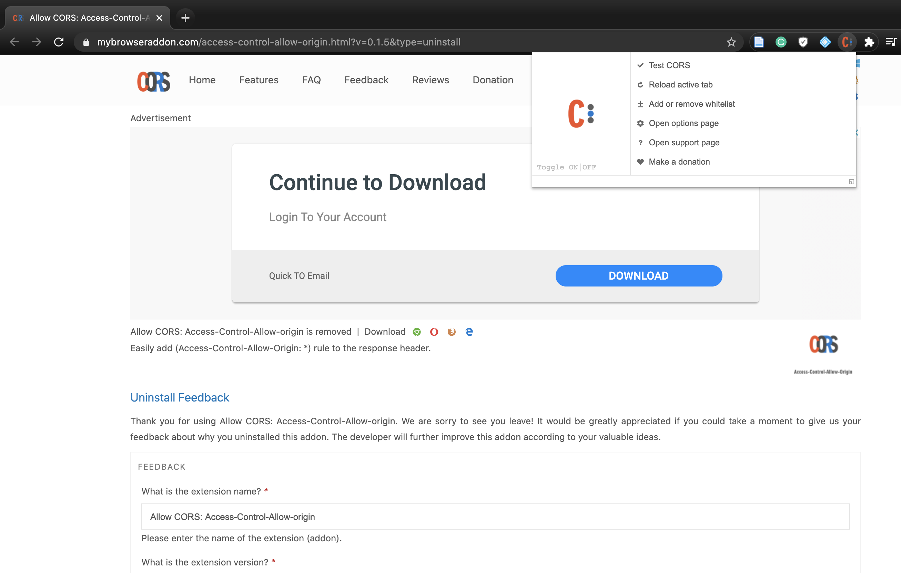

Instructions to prepare your own data for Boxer #
CORS #
In order to successfully load your dataset, you need to first add an extension called CORS (Access-Control-Allow-Origin lets you easily perform cross-domain Ajax requests in web applications) to Chrome. Everytime you want to use your own dataset, please remember to enable ‘CORS’. 
Data Set Composition #
The data set used for Boxer consists of 3 files:
-
results.csv: This file contains the prediction results of each classifier on each instance, where each row represents the id of the data sample and each column represents the name of the classifier.
-
features.csv: This file displays the features of each instance, where each row represents the id of the data sample and each column represents the name of each feature.
-
manifest.json: This file is the configuration of the data set, which helps Boxer system to read and load the data set.
{
"datasetName": "IMDB 5000 dataset", // name of the data set
"classes": [ // array including the names of classes
"HIGH",
"MED",
"LOW"
],
"classifiers": [ // array including the names of classifiers
"LR",
"KNN",
"LDA",
"NB",
"SVM",
"SVM-W",
"RF",
"RF-W",
"DT"
],
"features": { // dict including the detailed information of each feature: "type", "description", "categories"(optional), "bounds"(optional)
"train_or_test": {
"type": "categorical",
"categories": [
"train",
"test"
],
"description": "whether instance was used for training or testing"
},
"movie_title": {
"type": "nominal",
"description": "title"
},
"title_year": {
"type": "interval",
"description": "year released"
},
"content_rating": {
"type": "ratio",
"description": "content rating",
"bounds": [ 0.0, 1.0 ]
},
}
}
Load Data into Boxer #